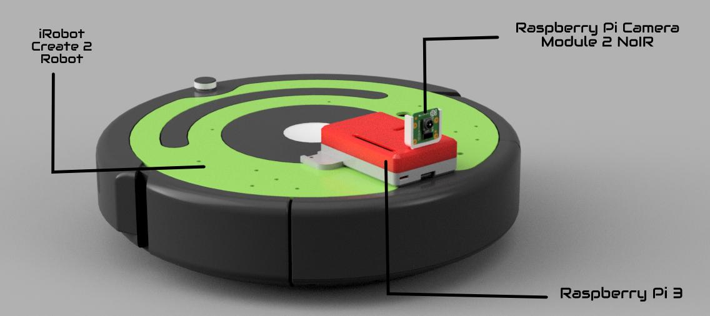
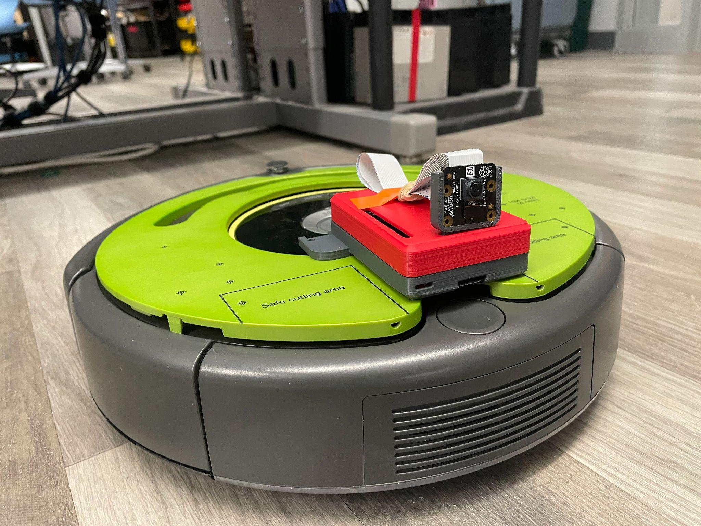
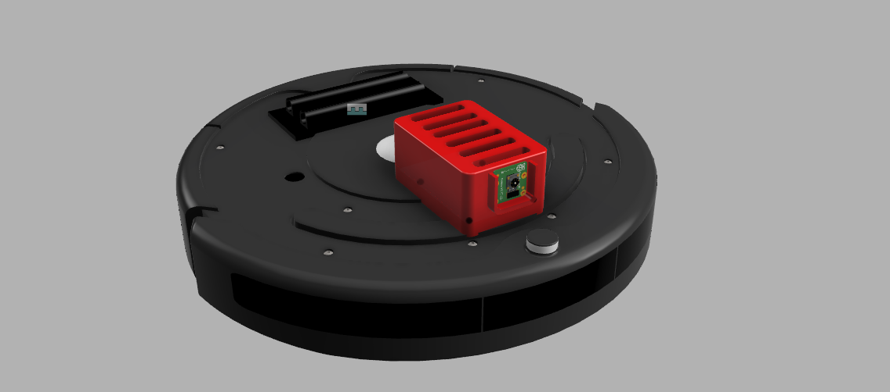
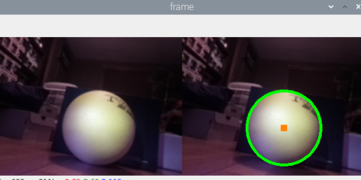

Project | Senior Capstone, 2023
TRAIN
TRAIN (Tracking Robot using Artificial Intelligence Navigation) is a robot that finds, tracks, and autonomously navigates toward objects using machine learning. I built it as my senior year capstone project, researching how AI-driven robotics is changing the workforce and building TRAIN as a working example of that shift. This one never got its own GitHub repo, so the paper and slides below are the record of it.
Hardware used
- iRobot Create 2 (used as the robot base, interfaces with a Raspberry Pi and is programmable in Python)
- Raspberry Pi 3 (runs the object tracking and navigation program)
- Raspberry Pi Camera Module 2 NoIR (8MP, used for object detection)
- PiJuice portable battery (lets the robot move untethered)
Photos




How it works
TRAIN uses its camera to find an object, then uses machine learning to figure out where that object is and drive toward it on its own. I originally tried building this with color recognition, tracking a specific shade of red. That fell apart fast: the camera struggled to isolate the right hue without extra lighting, and it kept picking up red from other sources in the room, like skin tone. Lighting changes alone were enough to throw off the color values entirely.
I switched to TensorFlow, an open-source machine learning library, and had it track objects through a trained model instead of raw color values. That held up far better. Along the way I also found the camera was outputting video upside down, which needed a software fix, and the Raspberry Pi 3 struggled to keep up, dropping to about 2 frames per second. I sped that up by trimming the program down and limiting how many objects it tried to track at once.
Timeline
- Design completed: November 22, 2022
- First prototype: December 7, 2022
- Programming completed: December 28, 2022
- Final product completed: December 29, 2022
Paper
My full capstone paper, covering the research on AI-driven robotics in the workforce alongside the TRAIN build itself, is embedded below.
Slides
Slides from my capstone presentation.
Credit
Mentored by Kevin Monteith.
Back to all projects